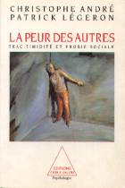

| Évaluez votre peur des autres |
|
Vous trouverez dans ce test une liste de 14 situations que chacun d'entre nous peut être amené à rencontrer. Veuillez cocher pour chaque question, en mettant de 0 à 3, ce qu'est actuellement (et non il y a un an ou même un mois) : - dans la première colonne, l'intensité de la gêne ressentie dans la situation indiquée, - dans la deuxième colonne, la tendance à éviter cette situation. S'il s'agit d'une situation à laquelle vous n'êtes jamais confronté, imaginez simplement ce que seraient, à votre avis, votre gêne et votre évitement. Il n'y a pas, bien sûr, de « bonne » ou de « mauvaise » réponse. Soyez sincère avec vous-même. Ne perdez pas trop de temps à répondre, votre première impression sera sans doute la plus exacte... |
|
Test extrait du livre : LA PEUR DES AUTRES TRAC, TIMIDITÉ ET PHOBIE SOCIALE CHRISTOPHE ANDRÉ PATRICK LÉGERON  |
| Commencer le test |